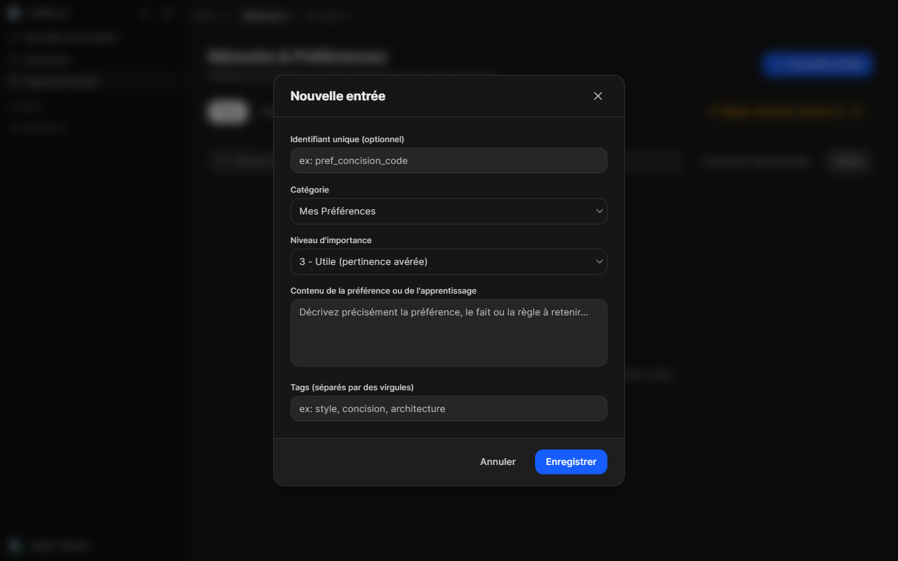

13. Mémoire & Actions
Une mémoire organisée entre invariants durables et contexte de session
ECHO distingue ce qui définit votre manière de travailler sur la durée (préférences, contraintes métier, règles explicites) de ce qui appartient à une conversation ou à un document ponctuel. Vous gardez un contrôle direct sur ces souvenirs depuis l'espace Mémoire et via les actions proposées sous chaque message.
1. Mémoire à long terme : Profil d'Alignement et Hypothèses
Les informations transversales utiles d'une conversation à l'autre sont classées en deux catégories et pondérées sur une échelle stricte de 5 niveaux d'importance :
- Profil d'Alignement : vos préférences de formatage, contraintes techniques, habitudes et règles explicites.
- Hypothèses d'Apprentissage : les méthodes de résolution et stratégies d'outils qui ont fait leurs preuves.
| Niveau | Libellé | Critère de déclenchement |
|---|---|---|
| 1 | Trivial | 1 observation isolée ou indice non encore confirmé. |
| 2 | Mineur | 2 occurrences concordantes rapprochées ; préférence secondaire. |
| 3 | Utile | 3 occurrences concordantes ; fait vérifié ou habitude établie. |
| 4 | Majeur | 3 occurrences concordantes structurantes ; préférence forte ou choix d'architecture clé. |
| 5 | Axiome | Injonction explicite de votre part ou invariant stratégique critique. |

Espace de travail Mémoire : recherche, filtre rapide Axiomes (Niveau 5) et création d'une entrée pondérée.
Maîtrise manuelle des souvenirs et consolidation
Depuis Espace de travail → Mémoire, vous pouvez rechercher, ajouter ou supprimer toute entrée et isoler en un clic vos Axiomes (Niveau 5). Lorsqu'un même fait est renforcé par de nouveaux échanges, ECHO conserve automatiquement le niveau d'importance le plus élevé lors de la fusion.
2. Mémoire de session et recherche dans l'historique
Chaque document déposé et chaque tour de parole clôturé sont indexés pour permettre à l'assistant de retrouver l'information utile au bon moment, selon trois modes complémentaires :
Inventaire des sources
Dresse la liste des sources disponibles dans la session (historique de la discussion, fichiers joints, notes), avec leur nombre de fragments, leurs dates limites et un aperçu des bornes.
Lecture chronologique
Parcourt les échanges ou documents dans l'ordre du temps (du plus récent au plus ancien, ou inversement) pour répondre aux questions temporelles (« au tout début de notre échange », « hier »).
Recherche sémantique
Retrouve les passages par proximité de sens selon différents degrés de précision (large, standard, strict, exact ou seuil manuel), en horodatant chaque extrait et en filtrant par étiquette ou sur toutes les sessions.
Protection des branches et des productions
Lors d'une recherche dans la conversation en cours, ECHO filtre automatiquement les résultats sur la branche active afin que des messages supprimés ou issus d'une variante abandonnée ne polluent pas le raisonnement. En parallèle, les documents ou livrables déjà générés sur disque restent préservés et identifiés comme productions issues d'une autre branche si vous consultez le registre.
3. Les quatre actions sous les messages et le clonage
Sous chaque réponse de l'assistant, des boutons d'action permettent d'intervenir directement sur la session en cours :
| Action | Effet concret | Cas d'usage |
|---|---|---|
| Poursuivre dans une nouvelle conversation | Condense l'échange actuel en deux passes (synthèse globale et détails récents) et transfère étiquettes, fichiers, espace Codex et mémoire de la branche active vers un nouveau fil allégé. | Recommandé lorsque la jauge de contexte approche la saturation (au-delà de 80 %) pour repartir sur une fenêtre propre sans perte. |
| Purge ciblée de la mémoire | Ouvre une liste déroulante permettant de cocher et supprimer précisément des fragments vectoriels obsolètes ou erronés. | Corriger un souvenir faux ou nettoyer un document qui n'a plus lieu d'être rappelé. |
| Export PDF | Génère un document PDF imprimable de l'échange en cours. | Archivage local ou partage hors ligne d'une session. |
| Réinitialisation d'authentification | Purge les jetons d'accès du fournisseur d'intelligence artificielle sans toucher à vos conversations, fichiers ou secrets du Coffre. | Dépannage rapide en cas de désynchronisation de connexion API. |
Clonage et bifurcation (Fork) fidèles
Lorsque vous dupliquez une conversation depuis la barre latérale ou depuis un message précis, ECHO copie l'état exact de la session (historique, fichiers, dépôts versionnés ramenés à l'instant exact du message, captures de navigation conservées et fragments vectoriels de la branche active) sans contamination entre la copie et l'original. Lors d'une migration (« Poursuivre dans une nouvelle conversation »), si la copie vectorielle est incomplète, une fenêtre de confirmation vous en informe avant toute redirection.
Dossier d'Ingénierie : Collections Qdrant 1024-d, Filtrage de Branche, 4 Actions & Moteur de Clonage Atomique
1. Mémoire Long-Terme (echo_meta_artifacts) & UI Workspace
- Vectorisation & Outils (
memory_and_rag_tool.pyv6.5.2.1) : Stockage dans Qdrant (qdrant/qdrant:v1.19.1, vecteurs 1024 dimensions produits par30-docker-embedding-worker/microsoft/Harrier-OSS-v1-0.6B). - Protocole
PACP/PRAC:update_meta_artifact(artifact_name, fact, importance)imposeartifact_nameparmi"Profil d'Alignement"ou"Hypothèses d'Apprentissage"etimportance: Literal["1", "2", "3", "4", "5"]obligatoire ; lors d'une fusion sémantique, préservemax(imp_val, existing_imp)et formate viaMEMORY_IMPORTANCE_LABELS. La consolidation nocturne (20-docker-admin-manager) regroupe Lvl1 → Lvl2 par centroïde L2-normalisé. - Recherche & Suppression :
search_meta_artifactsapplique reranking pondéré et schéma contraintresponse_schema=RagDistillOutput;delete_meta_artifact_itemsupprime parmemory_id. Ces deux mutations sont interdites aux sous-agents headless (DELEGATE_AGENT_BLACKLIST). - Gestion UI : Routeur souverain
routers/meta_artifacts.py(v6.2.0.1) et composantEchoMetaArtifacts.svelte(scroll, recherche, filtre cumulableAxiomes (Niveau 5), modale de création 1..5).
2. Mémoire Épisodique de Session (echo_session_rag) & Garbage Collection
- Indexation & Recherche (
search_sessions_context) : CollectionCOLLECTION_SESSION_RAGdotée de 4 index payloadkeyword(user_id,chat_id,source_id,message_id). Trois modes exclusifs :inventory(en-têtes légers agrégés sanstext),chronological(newest_first/oldest_first, hydratationPOST /points) etsemantic(paliersBROAD = 0.34,STANDARD = 0.52,STRICT = 0.63,EXACT = 0.81oucertainty_level="COSINE"aveccosine_thresholddans[0.0, 1.0]). - Étanchéité de Branche & Provenance : En recherche locale (
global_search=False), filtre déterministe sur la branche vivante viabuild_branch_rag_filter(active_ids)(echo_session_gc.pyv5.237.20.2). Le GC exécutecompute_dead_set/purge_dead_setsousSAVEPOINT echo_purge_deadtout en conservant les productions disque qualifiéeshors_branchedansquery_registry_tool.py(v6.13.1.1). En contexte sous-agent headless, la recherche est restreinte ausub_sidcourant. - Écriture / Purge :
save_session_contextetdelete_session_context_source(un sous-agent ne peut purger que ses propres sources).
3. Les 4 Actions (13-owui-actions/) & Événementiel (15-owui-events/)
resume_in_new_chat_action.py(v6.7.1.1, Priorité 20) : Extrait la branche active viaChats.get_chat_by_id(incluantm["output"]et purge des balises de raisonnement), propage les étiquettes (Chats.add_chat_tag_by_id), exécute une distillation en 2 passes viaEchoGeminiClient.call_distillation(USR_ACTION_RESUME_GLOBALpuisUSR_ACTION_RESUME_RECENT) sous HUD#echo-migration-hud, puis appellesync_resumed_sessionetduplicate_session_ragsousget_chat_clone_lock. Contrôle leRagCloneReport(upsert par lots de 64, réancrageanchor_msg_id) et affiche une modaleEchoEvents.confirmen cas de copie vectorielle partielle avant toute redirection/c/{new_chat_id}.purge_memory_action.py(v5.226.18.0, Priorité 30) : Interface scrollable de suppression granulaire dans Qdrant avec contrôle d'annulation UI.print_pdf_action.py(v5.231.46.1, Priorité 100) : Déclenche l'export PDF client viaEchoEvents.call_execute(UCTP Socket.IO + SSE/RPC).reset_auth_action.py(v5.235.5.1, Priorité 10) : Purge ciblée des clés Google/PKCE et OAuth2 viaEchoAuth.delete_auth_data_by_prefixesdansidentity.db.echo_chat_cloned_event.py(v5.235.5.1) &echo_session_clone.py(v6.14.2.2) : Réagit à l'événementchat.clonedavec HUD#echo-clone-hud, verrouget_chat_clone_lock, copie SQLitesqlite3.Connection.backup(), élagage causal de fork partiel (prune_forked_historyavec tolérance+1s), restauration temporelle GitCodexRepo.restore_repo_to_timestamp(cutoff_ts)surmain/plans/generatedavant réécriture du frontmatter des plans, filtrage exclusif desbrowserviewsau statutretained, réécriturereassign_session_idset duplication vectorielleduplicate_session_ragbornée àcutoff_tsetlive_ids.